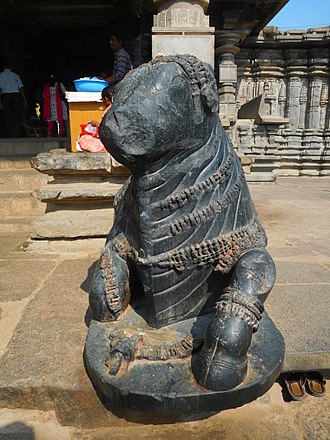
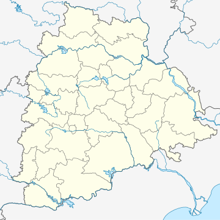

The Thousand Pillar Temple or Rudreswara Swamy Temple[1] is a historical Hindu temple located in the town of Hanamakonda, Telangana State, India.[2] It is dedicated to Lord Shiva, Vishnu and Surya. Thousand Pillar Temple, along with Warangal Fort, Kakatiya Kala Thoranam and Ramappa Temple are added to the tentative list of World Heritage sites recognised by UNESCO.[3]
Many Hindu temples were developed under the patronage of Ganapati Deva, Rudrama Devi and Prataparudra who were of Kakatiya dynasty. The Thousand Pillar Temple was believed to be constructed during the period between 1175–1324 CE by order of the king, Rudra Deva. It stands out to be a masterpiece and achieved major heights in terms of architectural skills by the ancient Kakatiya Vishwakarma Sthapathis (Architect). The Executive officer of the subject temple is P.Venugopal.[4] It was desecrated by the Tughlaq dynasty during their invasion of the Deccan.[citation needed] However, the 7th Nizam of Hyderabad,(Mir Osman Ali Khan) donated a grant of 1 Lakh INR towards the reconstruction of this temple.[5][6] Sculpture of Nandi at Thousand Pillar Temple Architecture The Thousand Pillar Temple with its ruins lies near the Hanamkonda-Warangal Highway in Telangana State, about 150 kilometres (93 mi) from the city of Hyderabad.  Temple locally known as Veyisthambala Gudi (Thousand pillars temple) is one of the fine and earliest available examples of Kakatiya art, architecture and sculpture. It was built by Rudra Deva and named after him as ‘Sri Rudreswara Swamy temple with the presiding deity as Rudreswara, in 1163 AD in the style of later Chalukyan and early Kakatiyan Architecture, star-shaped and triple shrined (Trikutalaya). The temple is a fine specimen of architecture and sculpture with One thousand pillars. There are richly carved pillars, perforated screens, exquisite icons, rock cut elephants and the monolithic dolerite Nandi as components of the temple. Strengthening of foundations like sandbox technique, the skill of Kakatiya sculptors is manifest in adroit craftsmanship and flawless ivory carving technique in their art. The ingenuity of Kakatiya sculptors is visible in likes of lathe turned, and shiny polish in dolerite and granite stone sculpture and craftwork of Nava Rangamandapa. The temple was renovated in 2004 by the Government of India. Archaeological Survey of India and modern engineers have been working for the temple's further renovation
Transport The nearest railway station is Warangal railway station, which is 6 kilometres (3.7 miles) away from the temple. Rajiv Gandhi International Airport is the nearest airport to this temple.
"Thousand Pillar Temple History". Retrieved 18 March 2018. 1,000-pillar temple to get facelift - Times Of India. Articles.timesofindia.indiatimes.com (2003-07-20). Retrieved on 2013-08-25. Centre, UNESCO World Heritage. "The Glorious Kakatiya Temples and Gateways - UNESCO World Heritage Centre". whc.unesco.org. Archived from the original on 10 October 2017. Retrieved 28 June 2016. "Thousand Pillar temple". September 2016. "Attempt to portray Nizam as 'intolerant oppressor' decried". Jaganath, Dr Santosh. The History of Nizam's Railways System. p. 37. ISBN 978-1-312-49647-7. Retrieved 28 June 2020.
Warangal, India has centuries of history and many sites of tourist interest.[1] Some of them are: